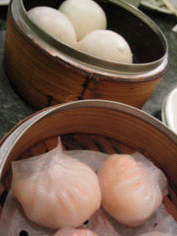
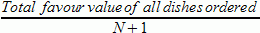

|
Problem B: Let's Yum Cha! |
Yum cha, a term in Cantonese, literally meaning "drinking tea", refers to the custom of eating small servings of different foods (dim sum) while sipping Chinese tea. It is an integral part of the culinary culture of Guangdong and Hong Kong. For Cantonese people, to yum cha is a tradition on weekend mornings, and whole families gather to chat and eat dim sum and drink Chinese tea. The tea is important, for it helps digest the foods. In the past, people went to a teahouse to yum cha, but dim sum restaurants have been gaining overwhelming popularity recently.

Dim Sum literally means "touch your heart", which consists of a wide spectrum of choices, including combinations of meat, seafood, vegetables, as well as desserts and fruit. Dim sum can be cooked, inter alia, by steaming and deep-frying. The various items are usually served in a small steamer basket or on a small plate. The serving sizes are usually small and normally served as three or four pieces in one dish. Because of the small portions, people can try a wide variety of food.
Some well-known dim sums are:
The picture on the right shows some of the dim sums mentioned above. Can you name them?
Today you go to yum cha with N friends. You and your friends have agreed that everyone will pay the same amount of money (to within one dollar), and each and every one of you will pay at most $x. In the restaurant there are K kinds of dim sums to choose from. Every one of you has assigned an integer "favour index" to each dim sum, ranging from 0 to 10.
Now you are responsible for choosing what dim sums to order. You wanted to maximize your total "favour value" from dim sums you choose, but you will certainly get beaten by all your friends if you ignore their interest. Therefore, you shall maximize the mean of the total favour value everyone gets (computed using the formula ) instead. Note that even though we are considering the "mean favour value", this does not imply that everyone can actually get a piece of every ordered item!! Anyway, since you are very good friends, you will certainly find some ways to share the food so that everyone is happy, right? :-)
Since you would like to try more different kinds of dim sums, you shall NOT order more than 2 dishes of a same type of dim sum. Also, since you do not want to waste food, you shall NOT order more than 2(N+1) dishes in total (i.e. 2 dishes for each of you).
When computing the amount of money to be paid we shall NOT just add up the prices of the dim sums. We also need to take care of the following two charges:
Input consists of no more than 25 test cases. Each case begins with four integers N, x, T and K, whose meanings have been explained above. Then comes K lines, each giving the information of one particular dim sum. The first integer is the price of the dim sum, followed by your favour index, then N integers which are the favour indices of your N friends.
Input ends with a line with four zeros.
For each case, your program should give the optimal mean favour value, correct to 2 decimal places. This value is always positive.
3 10 5 2 6 7 5 6 9 10 9 10 10 8 0 0 0 0
16.00